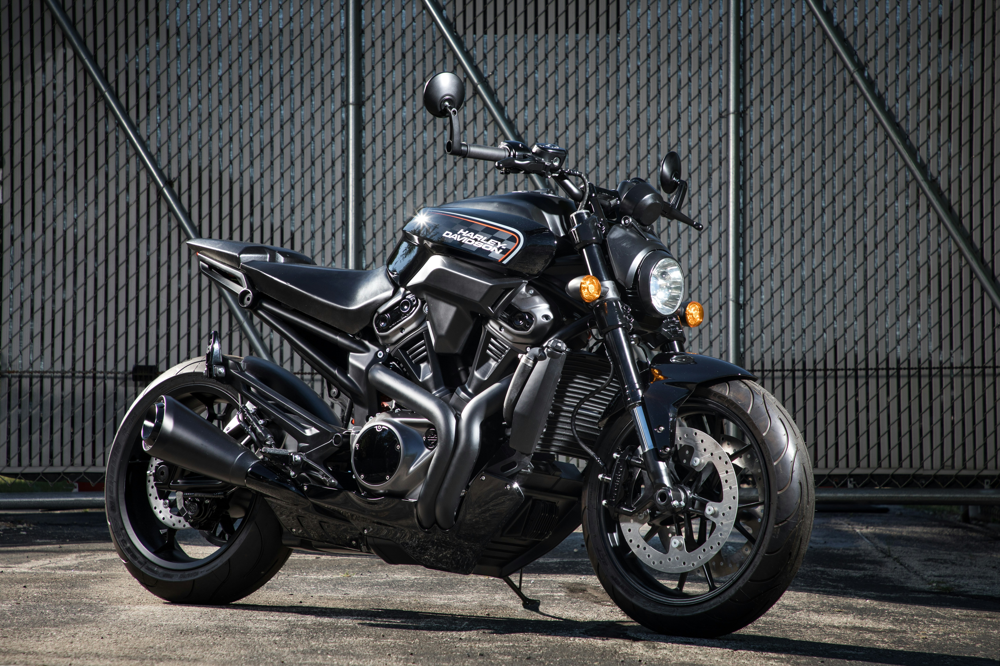
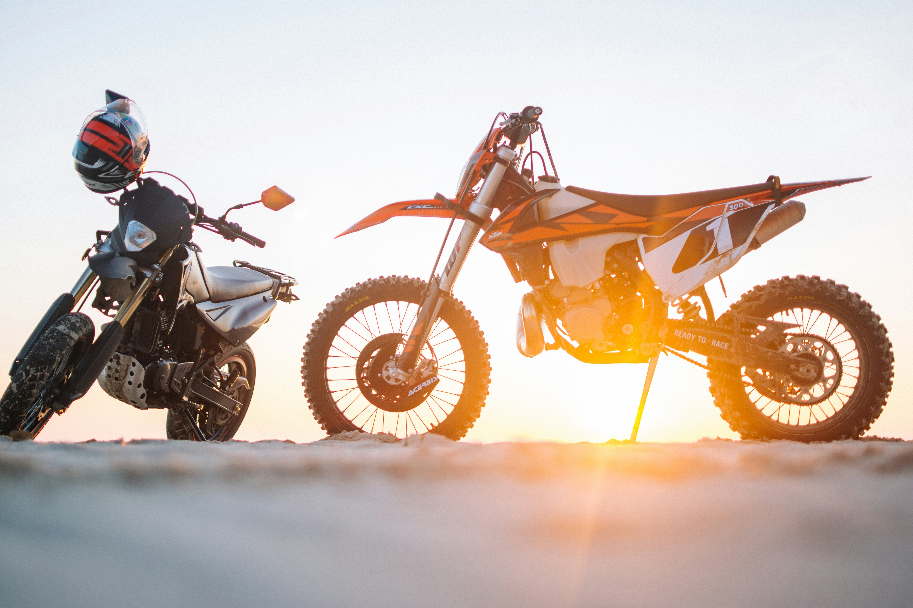

Loading...
Loading...
Loading...
Loading...
Loading...
Loading...
Loading...
Loading...
pulsar 150

new Model ninja
Riding a bicycle is the closest you can get to flying

yamana R 15
New model yamana R 15

Rider bike
New Model Rider Bike
TamilNadu Top New Model Bike
Life is like riding a bicycle. To keep your balance, you must keep moving

Racing Generation R9
speed shopstar star star star star
Nothing compares to the simple pleasure of riding a bike

R 15 Red color
New Modelstar star star star star
The bicycle is a curious vehicle. Its passenger is its engine